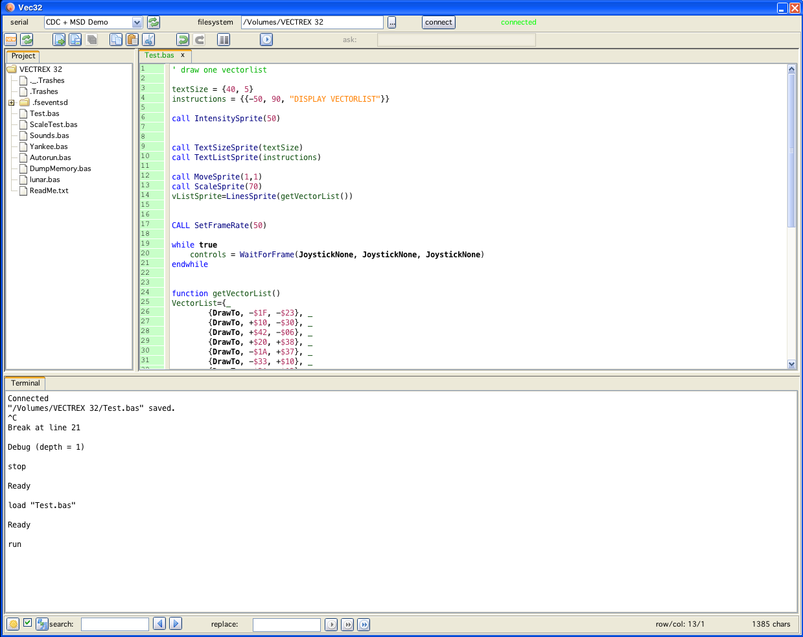

give the serial port, the  rescans the available ports (in case you switched on vectrex "later")
rescans the available ports (in case you switched on vectrex "later")
the location of the usb drive
From the announcement of the author:
I have created a new cartridge for the Vectrex that effectively upgrades it to 32 bits and allows you to write Vectrex games in interactive interpreted BASIC.
The cartridge, which I call the Vectrex32 SmartCart, is based on the Microchip PIC32. It's a 32 bit microcontroller that runs at 200 MHz, has a floating point unit, 2MB of flash, and 512KB of RAM. By comparison, the Vectrex's 6809 is an 8/16 bit processor with 8KB of ROM and 1K of RAM.
The BASIC interpreter and the game run on the PIC32. There's a dual-port memory chip readable and writable by both the PIC32 and the 6809. The PIC32 writes 6809 machine code into the dual-port memory and the 6809 runs it. Thirty times per second, the PIC32 writes the instructions needed to draw the screen, play sounds, and read the controller. Since the game logic is running on the PIC32, games can be far more sophisticated than anything the Vectrex could do alone.
The SmartCart also has a USB interface. When connected to a PC, it appears as a mass storage drive and a serial port. The drive holds BASIC programs and the serial port can be used with a terminal emulator. You can interactively debug a BASIC program (my version of BASIC supports breakpoints, single-stepping, printing out variables, and more). You can also interactively change things on the screen, e.g. you can experiment to get your shapes looking right and moving right.
The SmartCart provides advanced graphics features like sprites, scaling, rotating, and clipping.
Read more: http://vectrex32.com/
Vide has some preliminary support for the above device. Like above described the device is accessed via:
9600 8n1 terminal (communication)
file system (usb drive - files)
This makes handling/programming sometimes a bit cumbersome. For that reason I added editing and starting to vide.
You can access the Vec32 Terminal under the menu tools. If you do so, a window similar to vedi appears:

Vec32 Terminal
In the upper region of the window you must define the Vectrex32 device parameters
give the serial port, the  rescans the available ports (in case you switched on vectrex "later")
rescans the available ports (in case you switched on vectrex "later")
the location of the usb drive
The combobox gives you all currently available serial ports. Please chose the correct one. There is no internal testing if you chose the correct port! (probably nothing bad will come from a wrong port choice - but you won't be able to run your BASIC programs)
The serial port selection was tested with Windows 7, Mac OSX and Linux Ubuntu. If there is any problem establishing a connection, you may try reaching out to Malban.
Note:
Under my linux installation it was neccessary to change file system permissions for the tty. You may need to do so too. With my system following line was neccessary:
sudo chmod 666 /dev/ttyACM0
(your terminal might have a different name)
The usb drive of Vectrex 32 stores the BASIC programs that can be run "on" the vectrex. In order to store files there, naturally the drive must be mounted to some place.
Chose the right drive/folder/mountpoint using the file selection button.
The contents of the drive will be displayed in the treeview to the left.
Only if that location is chosen correctly the transport of your edited files to the Vectrex32 cart will succeed!
If you selected the above two entities, press "connect" to connect to the Vectrex 32 device. If the connection was successfull a green "connected" will appear next to the button (a red "not connected" otherwise).
The device settings will be stored. But can naturally only be used if the Vectrex 32 device is connected and switched on.

Creates a new file.

Refresh the current display tree (if you externally added files - e.g.).

Load a file (from anywhere).
Pressing shift with the button, will reload the current edited file.

Save the current file.
Pressing shift with the button, will "save as" - opens a file dialog.

Restarts syntax highlighting.

Saves the current file to its original location (probably on the Vectrex 32 device) and tries to run it as a BASIC program.
In order to do that following "terminal"-commands are send:
CRTL/C
(breaks any currently running Vectrex 32 programs)
STOP
(stops any currently running Vectrex 32 programs)
LOAD "currentFile"
(tries to load the just saved program)
RUN
(... and starts it)
If "initialization" of Vectrex 32 went alright, than the tree shows the files which are stored on the Vectrex 32 usb device. Clicking on such a file will open it in the editor to the right. There are no popup menus (yet).
The editor is basically the same as vide, with a different syntax highlighting. Inserting vectorlists and quickhelp is not available.
The lower part of the window is the "Terminal".
The terminal window provides the two way communication with the Vectrex 32 device.
Basically I tried to implement a "C64"-like screen. Within the terminal you can move accross the panel using cursor keys. Pressing return will send that line (up to the cursor position) to the Vectrex 32 device.
Hitting CTRL/C will send a "CTRL/C" to the device.
Letters are not send when typed - they are only send after hitting "return" (CTRL/C being an exception).
Caveats
The terminal "emulation" is not as "clean" as I would like. Since the serial device is both an input and an output device, some communications (sometimes) when printing to the used jEditorPane (Java thingy) seem to "overlap". Everything works alright but some letters are sometimes printed in the wrong place.
Without doing a completely different "thing" I don't think this can be changed easily (I tried! ). What I usually do when "talking" to the device is, "CTRL/A" + delete to clear the screen and start fresh (or just press the little "sun" button).
I also noticed, that sometimes the "CTRL/C" is not accepted immediatly, if that is the case, press "return" after the "CTRL/C".
After implementing the "terminal" emulation - I have not used any "real" terminal with Vectrex 32, so I don't know if the next behaviour does also exist in the "normal" environment.
Sometimes, when running a BASIC program the serial communication seems to "stumble". The 5 different parts are executed right after another (SAVE, CTRL/C, STOP, LOAD, RUN), sometimes it seems, that the filesystem transfer is not finished, when the "LOAD" is commited to the device. Than the BASIC program is loaded in an "unfinished state" - which results in any kind of BASIC error. If a totally unexpected error happens, just try another "RUN"(YES, I already implemented a delay after the saving...).
Vectorlists that are build in vecci and are exportable as "Draw_VL_mode" can also be exported in BASIC format. To do that check the little checkbox at the side of the corresponding button. If done, a vectorlist usable in BASIC programs will be generated. Example:
VectorList={
{MoveTo, +$20, -$40},
{DrawTo, +$20, +$00},
{DrawTo, +$00, +$40},
{DrawTo, -$20, +$00},
{DrawTo, -$20, -$40},
{DrawTo, +$20, +$00},
{DrawTo, -$20, +$00},
{DrawTo, +$20, -$40}}
If you also check the "runnable" button, a Vectrex 32 runable BASIC program which displays your vectorlist will be generated.
To transport the generated vectorlist to your own BASIC program you (as of now) must use copy/paste from vecci to Vec32.
In the middle of the iconbar is a "YM"-button, with that you can call the YM-editor and load and convert YM-data to BASIC.
The only output option as of now is UNPACKED (and not switchable).
Beware, that the storage space of the Vectrex32 is "only" 430KB and that can be easily filled with a moderatly long YM files and its BASIC data output.
A BASIC ym-player can also be generated.
Following facts can be confusing when using Vectrex 32:
the BASIC text files must be "windows" like, thus a line must end with 0x0d + 0x0a characters (vide does that for you)
all vectorlists have the coordinates switched to "usual" vectrex usage, thus a vectorlist is stored with x, y as coordinates, not y, x
coordinates within a vectorlist are "absolut" not relative